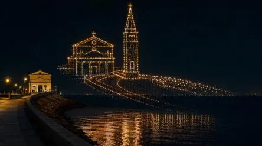

da mar 6 gen a lun 7 dic
UN MARE DI DRONI SULLA MADONNA DELL’ANGELO: CAORLE APRE IL CHRISTMAS TIME 2026 CON UNA PRIMA STORICA
CAORLE (Venezia) – Un mare di luci per aprire il mare del Natale. Il 7 dicembre alle 18.30, in anteprima assoluta, il cielo di Caorle si accenderà con lo show di centinaia di droni, uno spettacolo che gli organizzatori definiscono storico. È la grande novità del Caorle Christmas…
 Indicazioni
Indicazioni
- Costi e prenotazioni
- Costo non indicato · Prenotazione non indicata
- Programma
- Programma da verificare. Apri la fonte ufficiale per orari e possibili aggiornamenti.
- In caso di maltempo
- Nessuna indicazione specifica pubblicata.
- Note
- Acquisito automaticamente dalla fonte.
L’EVENTO
Descrizione completa
CAORLE (Venezia) – Un mare di luci per aprire il mare del Natale. Il 7 dicembre alle 18.30, in anteprima assoluta, il cielo di Caorle si accenderà con lo show di centinaia di droni, uno spettacolo che gli organizzatori definiscono storico. È la grande novità del Caorle Christmas Time 2026, il mese natalizio che dal 5 dicembre al 6 gennaio trasformerà ancora una volta la città in un villaggio incantato affacciato sull’Adriatico. L’evento è organizzato da Saaway Travel, braccio operativo del Consorzio Turistico, in collaborazione con il Comune di Caorle. L’attesa è già alta, in molti hanno chiamato per chiedere informazioni all’ufficio turistico per prenotare le camere.
“Quest’anno riusciamo a portare sul litorale un evento che darà particolare enfasi al Caorle Christmas Time 2026”, spiega Corrado Sandrin, presidente del Consorzio Turistico di Caorle. “Un mare di droni avvolgerà la Madonna dell’Angelo con uno spettacolo mozzafiato. Centinaia di piccoli velivoli si alzeranno insieme davanti al mare, componendo in cielo figure e scene natalizie con una precisione impossibile per qualsiasi altro spettacolo pirotecnico. Una coreografia di luce che sostituisce l’impatto dei fuochi d’artificio con una proposta più rispettosa dell’ambiente e del paesaggio. Per questo si parla di show “green”: un modo di festeggiare coerente con una località che vive di mare e di natura e che ha scelto di investire sulla sostenibilità”.
Nel giorno dei droni, a partire dalle ore 16.00, Radio Piterpan sarà protagonista con una diretta dal suo iconico radio truck, portando musica, energia e intrattenimento per coinvolgere e animare il pubblico in attesa dell’attesissimo show di droni. A scandire il ritmo del pomeriggio sarà il DJ set di Thomas Menegazzi, accompagnato dalla voce di Alice Fassina, per creare un’atmosfera coinvolgente e trasformare l’attesa in un vero e proprio momento di festa. Ad arricchire ulteriormente l’esperienza ci sarà anche Lex Serafo, il trampoliere più alto d’Italia, pronto a sorprendere il pubblico con la sua presenza scenografica e le sue performance spettacolari.
L’anteprima del 7 dicembre arriva sull’onda di un’edizione, quella del 2025, che gli organizzatori avevano archiviato come la migliore di sempre. I numeri parlano chiaro: oltre cinquecentomila presenze complessive, un dato record che supera quello dell’anno precedente e certifica la crescita costante del Natale al mare caorlotto. A colpire, tra i dati, è la provenienza dei visitatori. Moltissimi sono arrivati dall’estero, con la grande maggioranza dall’Austria e una presenza enorme da Germania, Svizzera, Regno Unito e Polonia. In crescita anche gli arrivi da Spagna, Francia e Slovenia. Un risultato che si deve anche all’imponente campagna di comunicazione condotta sui media e sui social, con notizie, video e post che hanno raggiunto milioni di persone.
Ma c’è un altro segnale che gli operatori considerano forse il più significativo: le nuove aperture di negozi che di solito, in inverno, restano chiusi. La dimostrazione, sottolineano, che la formula funziona non soltanto per hotel e ristoranti, ma per l’intero tessuto commerciale della città: il Natale ha contribuito a consolidare una nuova stagione di turismo invernale e a rafforzare l’identità di Caorle come meta viva tutto l’anno.
Nell’attesa che vengano svelate le novità di quest’anno, ricordiamo che lo scorso anno la città ha proposto il Natale più lungo d’Italia, con un percorso di quasi due chilometri, quattrocento metri in più rispetto all’edizione precedente. Lungo il tragitto, ottantacinque tra casette e capanne, un primato a livello nazionale, richiamavano l’atmosfera autentica del villaggio dei pescatori. Numeri che hanno reso il villaggio natalizio tra i più grandi e complessi del Paese.
Lo show dei droni, in questo senso, è il simbolo della nuova edizione: un colpo d’occhio spettacolare, pensato per richiamare pubblico da tutto il Nordest e dall’estero, e al tempo stesso un messaggio sul modo in cui Caorle intende costruire il proprio futuro turistico. Il 7 dicembre, per una sera, il Natale salirà in cielo. Poi, dal 5 dicembre al 6 gennaio, toccherà alla città vestirsi di tutti i suoi colori.
IL PROGRAMMA
Programma e orari
Appuntamenti raccolti dalle fonti elencate. Dove manca un orario, non è ancora disponibile in questa scheda.
Programma pubblicato
- Dal 2026-01-06 al 2026-12-07
INFORMAZIONI UTILI
Prima di partire
- Controllare la fonte prima di partire.
ORGANIZZAZIONE